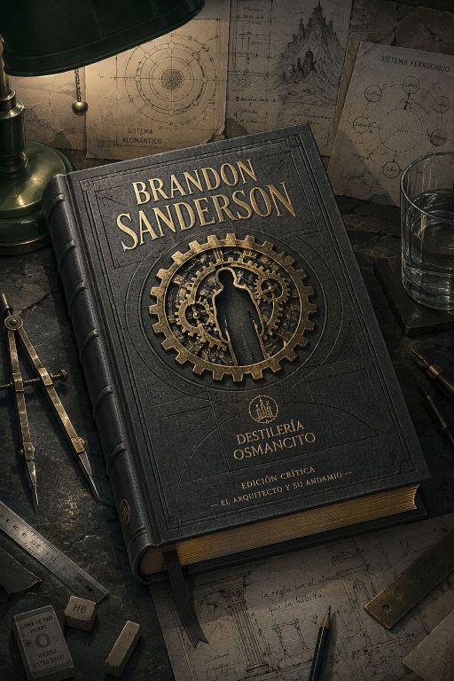
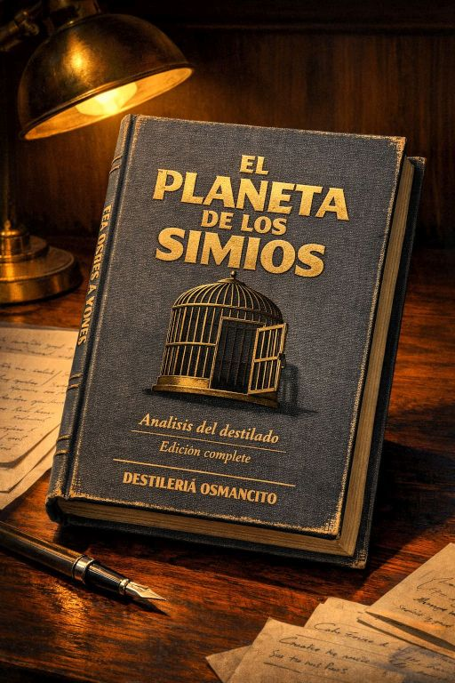

Destilados
Inventario de corpus procesados.
Anna Karénina

Dos vidas paralelas: una que se destruye por amor y otra que aprende a vivir sin teoría. El corpus más largo que ha entrado en la Destilería. 880 páginas. Una sola vela al final.
El Puente Sobre el Río Kwai

El ingenio humano floreciendo en el horror más absoluto. Prisioneros que construyen su propia trampa de dignidad y derrota
El Cosmere

Sistemas de magia lógica y mundos vastos entrelazados en una arquitectura épica, donde el honor y la redención forjan leyendas
El Planeta de los Simios

Simios dominan, humanos retroceden: la razón clasificada como bestialidad por quien tiene el poder de clasificar
La Historia de la Filosofía

La historia popular de la filosofía occidental: once retratos de pensadores que buscaron la sabiduría como forma de vida
Nuestra Herencia Oriental

Monumental crónica del inicio de la civilización: desde el Cercano Oriente hasta Extremo Oriente, entrelazando política, fe, arte y vida cotidiana
El sistema
Un sistema de lectura profunda que opera dentro de Claude.
Destilería Osmancito extrae lo que el texto cargaba sin saberlo: la fracción noble que sobrevive sin contexto, la contradicción irresuelta que el autor no vio, la pregunta que el corpus abre y no cierra, el compuesto base que queda cuando todo lo demás se evapora.
Opera dentro de Claude mediante un prompt de lenguaje natural: el corpus entra — cualquier libro, guión u obra completa — y un paquete de análisis estructurado sale. No resume ni reseña. Somete el texto a calor y tiempo hasta que aparece lo que sobrevive: las joyas, la arquitectura oculta, el sedimento conceptual, la firma topológica.
Cuatro módulos. Seis imágenes. Una partitura que escucha lo que el análisis no alcanza a decir. Una flota, cuando el autor lo merece. El sistema opera siempre en español, sin importar el idioma del corpus. Emite umbral narrativo al inicio de cada módulo.